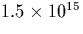
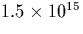

Until recently no LVMs were assigned to the oxygen dimer. However it has been suggested that a vibrational mode at 1012 cm-1 (first observed in 1972 [146]) could be due to the oxygen dimer [147].
There are several reasons for this. Firstly it is present after heat
treatments at a wide range of temperatures: 650 C
[102,148], 1100
C
[102,148], 1100 C [149] and
1350
C [149] and
1350 C [148], as well as in as-grown material at
concentrations of about cm-3
[270]. The line is definitely oxygen related given
its 43 cm-1 isotopic shift when going from 16O to 18O
[239]. Its annealing properties (discussed in
Section 6.5.1) are also consistent with that of a rapidly
diffusing dimer. Given that it is present over such a range of
conditions it seems sensible that it should be the simplest oxygen
complex possible, namely a dimer.
C [148], as well as in as-grown material at
concentrations of about cm-3
[270]. The line is definitely oxygen related given
its 43 cm-1 isotopic shift when going from 16O to 18O
[239]. Its annealing properties (discussed in
Section 6.5.1) are also consistent with that of a rapidly
diffusing dimer. Given that it is present over such a range of
conditions it seems sensible that it should be the simplest oxygen
complex possible, namely a dimer.
Assuming that the 1012 cm-1 mode is responsible for the dimer,
simple rate equation analysis led to a binding energy in the range 0.1
 Eb
Eb  0.2 eV [147]. This is
consistent with the idea that the dimer should not be important in the
kinetics of TD formation at higher temperatures [272].
Fits to plots of Log[1012] vs. Log(1/T) gave a more accurate dimer
binding energy of 0.16 eV [147,239]. Recent
detailed analysis has suggested a figure of eV [150].
0.2 eV [147]. This is
consistent with the idea that the dimer should not be important in the
kinetics of TD formation at higher temperatures [272].
Fits to plots of Log[1012] vs. Log(1/T) gave a more accurate dimer
binding energy of 0.16 eV [147,239]. Recent
detailed analysis has suggested a figure of eV [150].
In addition to the 1012 cm-1 mode, there is a secondary weaker
mode at 1006 cm-1 which is normally observed under the same
conditions. It is also present in as-grown material, but at
concentrations of about  cm-3
[270], and shows similar annealing properties. If
the 1012 cm-1 mode is produced by the dimer, given that the most
common defect in silicon is Oi, it is likely that the
1006 cm-1 mode is caused by the oxygen trimer, O3i. Little
is known about this defect, but crucially, from fitting their models
to experimental data, Markevich and Murin showed the fits were greatly
improved for the 1006 cm-1 mode if they assumed that this defect
was highly mobile [147].
cm-3
[270], and shows similar annealing properties. If
the 1012 cm-1 mode is produced by the dimer, given that the most
common defect in silicon is Oi, it is likely that the
1006 cm-1 mode is caused by the oxygen trimer, O3i. Little
is known about this defect, but crucially, from fitting their models
to experimental data, Markevich and Murin showed the fits were greatly
improved for the 1006 cm-1 mode if they assumed that this defect
was highly mobile [147].
There is a strong correlation between the 1012 cm-1 band and the 1107 band due to Oi [102]. The band shows very little temperature dependance (unlike Oi, suggesting any bonding in the defect is very different to Oi); it shifts from 1013 to 1012.2 cm-1 on going from 300K to 10K. With 18O it drops to 969 cm-1. It is always present in as-grown material.
After we suggested a dimer should give rise to more modes, further
examination has determined modes at 1105 and 1062 cm-1
(1060 cm-1 at 10K) which are correlated with the 1012 cm-1
[151]. The 1062 cm-1 mode is nearly twice
as intense as the other two, and is very broad (FWHM  7 cm-1
at 10K). More recently the 1105 cm-1 was shown to be
unconnected. There are also two lower modes at 685 and 552 cm-1,
the 552 cm-1 exhibiting only a small shift with oxygen isotope.
7 cm-1
at 10K). More recently the 1105 cm-1 was shown to be
unconnected. There are also two lower modes at 685 and 552 cm-1,
the 552 cm-1 exhibiting only a small shift with oxygen isotope.
Further evidence has come from irradiation experiments by Lindström and Hallberg [150]. Electron irradiated material was annealed, giving a high concentration of VO2 centres. This was then proton irradiated (which leads to Sii production), and using FTIR a decrease in the VO2 889 cm-1 signal was observed concurrently with the appearance of lines at 1012 and 1062 cm-1. This is consistent with the reaction .
The 1012 cm-1 band is not seen in C-rich material [239], where presumably most dimers are being trapped by CsOn complexes.
Note that there is another, electrically active, defect that forms after long time annealing, which also possesses a LVM at 1012 cm-1. The FWHP of this new 1012 cm-1 is much broader than the early 1012 cm-1 line and rapidly swamps it. This is also correlated with a lower mode at 744 cm-1. These modes come from a fundamentally different defect and should not be confused with the dimer modes. This mode overlap originally led to incorrect assignment of the 1012 cm-1 line to some sort of shallow thermal donor centre[239].